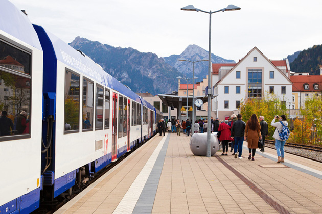

The Great Escape
Main Content

The true story of the escape of British officers from a German POW camp during WWII gets the full Hollywood treatment with American stars taking over most of the lead roles and that famous motorbike chase invented purely to showcase the skills of Steve McQueen.
These quibbles aside, the terrific supporting cast and grippingly detailed story have seen the film become a timeless favourite.
To be fair, the production could easily have been even more American, as the original plan involved building ‘Stalag Luft’ in California and filming only post-escape scenes in Europe, with a Second Unit.
Surprisingly, it turned out to be the convenience (and I daresay economy) of getting enough extras that saw the production moved to Germany and the Geiselgasteig Studios in Munich.
The studios have a significant history, having been used for Stanley Kubrick’s 1957 WWI drama Paths of Glory, 1958 epic The Vikings, musicals The Sound of Music (1965) and Cabaret (1972), fantasies Willy Wonka & the Chocolate Factory (1971) and The Neverending Story (1984), and Oliver Hirschbiegel’s Downfall (2004).
‘Stalag Luft’ was a huge set built outdoors in what had been forested land alongside the Geiselgasteig Studios. The deal was that, after production wrapped, two trees would be planted for every one removed. Fair enough, the area is now a pine forest immediately east of the studio lot and no trace of the filming remains.
Most of the film was shot here, but once the escapees are out of the tunnel, real German locations come into play.
The first location is actually the closest to the studio. ‘Neustadt Station’, where a number of escapees board the train, was Grosshesselohe Station, on the Munich-Holzkirchen line, just west of Geiselgasteig.
There are a couple of stations here, leading to some confusion. The one seen in the film is not Großhesselohe Isartalbahnhof, but the disused and abandoned stop a little to the northwest on Bahnhofplatz 2, just east of the bridge on Grosshesselohe Straße. No platforms remain but you can still see the old red-brick station buildings.
The post-escape sequence was filmed mainly around the Bavarian town of Füssen, on the Austrian border about 80 miles southwest of Munich.
Füssen Station itself, on Bahnhofstraße, became ‘Erzingen Station’ – the terminus "near the Swiss border" at which everyone disembarks and where Ashley Pitt (David McCallum) sacrifices himself to allow others a chance of survival.
Füssen also provides the streets of ‘Erzingen’ through which Bartlett (Richard Attenborough) and MacDonald (Gordon Jackson) manage to evade the Nazis before one fateful slip of the tongue gives them away.
The Lech River flows through Füssen, and on its waters, tunnellers Danny (Charles Bronson) and Willie (John Leyton) take a rowboat at Sebastianstraße, heading west toward Lechbrücke (Lechhalde Bridge).
And it’s on the terrace on Tiroler Straße at the southern end of that same bridge that the ‘Café Suzette’ – supposedly in ‘Toulouse, France’ – was built.
This is where Sedgwick (James Coburn) is unexpectedly informed by the waiter that there’s a phone call for him – just before the French Resistance takes out three Nazi officers.
Away from Füssen, Sedgwick’s journey starts when he calmly steals a bicycle on Ebersberger Straße in the town of Markt Schwaben, some 15 miles east of Munich.
He bicycles nonchalantly through the village of Speiden, near Eisenberg about seven miles northwest of Füssen. The tower with its ‘onion’ dome is that of Wallfahrtskirche Maria Hilf, a 17th century pilgrimage church.
If you’ve been wondering all these years what was in the large suitcase Sedgwick is so determined to take with him (no, it wasn’t the soul of Marcellus Wallace), there was a pay-off, revealed in a scene ultimately cut from the film. It contained his camping equipment.
In the village of Pfronten, a town about ten miles west of Füssen, Sedgwick boards a goods train at Bahnhof Pfronten-Ried (Pfronten-Ried Station) on Ladehofstraße.
“Cooler King” Hilts (Steve McQueen) aims higher than Sedgwick, stealing both a motorbike and a German uniform. The crossroads where he’s unable to answer a challenge from German guards is again Pfronten, at the junction of Füssener Straße and Kemptener Straße.
“Scrounger” Hendley (James Garner) and “Forger” Blythe (Donald Pleasence) are even more ambitious – stealing a plane from the now-closed Landsberg Air Base, also known as Fliegerhorst Penzing, near Penzing a few miles east of Landsberg am Lech, to the west of Munich.
Their flight naturally takes the picturesque route. If you’re going to fly over Bavaria, there’s no way you’re going to miss an aerial view of Schloss Neuschwanstein, Hohenschwangau, the fairytale castle of Bavaria's King Ludwig II, the one seen in Chitty Chitty Bang Bang.
But there’s a price to be paid for sightseeing. Only 20 minutes from the safety of the ‘Swiss border’, the plane comes down to earth about 30 miles southeast of Munich, in a field outside the village of Frauenried am Irschenberg, with the Maria-Geburt-Kirche in the background.
The only location well outside Bavaria was the seaport where Willie and Danny board a Swedish freighter, which is the port of Emden, on the north coast of Germany near the Dutch border.
If you’re fascinated by the real history and want to know more of Stalag Luft III, this was a Luftwaffe-run prisoner-of-war (POW) camp holding high-risk captured Western Allied air force personnel.
It was established in March 1942 near the town of Sagan, Lower Silesia, in what was then Nazi Germany and is now Żagań in Poland, 100 miles south-east of Berlin.
The site was deliberately selected because sandy soil made tunnelling difficult. Not difficult enough, apparently.
It’s now the Stalag Luft III Prisoner Camp Museum.
Visit Info
Visit The Film Locations
Germany
Visit: Germany
Visit: Munich
Flights: Munich Airport, Nordallee 25, 85356 München (tel: 49.89.97500)
Visit: Schloss Neuschwanstein, Neuschwansteinstraße 20, 87645 Schwangau
Poland
Visit: Poland
Visit: Wroclaw
Flights: Wrocław Nicolaus Copernicus Airport
Visit: the Stalag Luft III Prisoner Camp Museum, Lotników Alianckich 6, 68-100 Żagań (tel: +48.68.478.49.94)